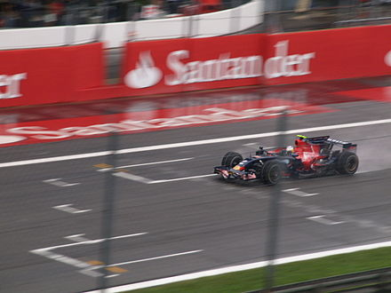
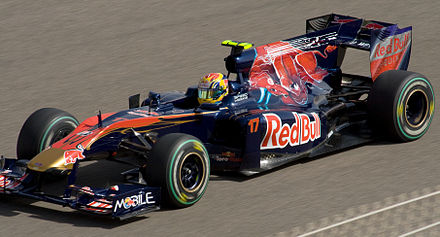
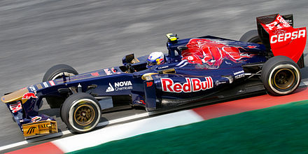

La Racing Bulls F1 Team (abbreviato in RB F1 Team), nota dal 2006 al 2019 come Scuderia Toro Rosso e dal 2020 al 2023 come Scuderia AlphaTauri, è una squadra corse italiana di Formula 1 con sede a Faenza, erede della Minardi dopo l'acquisto da parte dell'azienda austriaca Red Bull. Dal 2024 viene iscritta al campionato mondiale di Formula 1 con il nome di Visa Cash App RB F1 Team, in base al cambio di denominazione avvenuto nello stesso anno e per motivi di sponsorizzazione.
Manager della squadra è il francese Laurent Mekies. Dal febbraio 2006 al novembre 2008 l'ex pilota austriaco Gerhard Berger, amico di lunga data del patron della Red Bull Dietrich Mateschitz, e uno dei primi testimonial della bevanda energetica[2], è stato possessore del 50% delle quote della scuderia italiana.
Nella stagione 2007 la Toro Rosso ha montato motori Ferrari. Dopo una prima parte di stagione piuttosto deludente, a causa di problemi meccanici e di diversi errori dei piloti, Scott Speed è stato sostituito dal collaudatore BMW, Sebastian Vettel . Quest'ultimo ha dato vita a un duello negli ultimi 15 giri di gara con la più potente BMW Sauber di Nick Heidfeld per la sesta e settima posizione. Questi punti hanno valso alla scuderia il settimo posto nella classifica finale costruttori.

Sebastian Vettel al Gran Premio d'Italia 2008, dove ha ottenuto la prima storica vittoria per il team di Faenza partendo dalla pole position. Per il 2008 la Toro Rosso ha confermato Sebastian Vettel come prima guida e Sébastien Bourdais, in sostituzione di Liuzzi, come seconda guida. La squadra si è presentata alle prime gare della stagione con il modello STR2B, adattamento della vettura dell'anno precedente, in attesa di mettere in pista la nuova STR3. Bourdais ha conquistato i primi due punti iridati per la scuderia già al primo Gran Premio, arrivando 7, pur essendosi ritirato a tre giri dal termine per problemi al motore.
Nonostante le difficoltà che la scelta ha comportato, la squadra ha deciso di far debuttare la STR3 al Gran Premio di Monaco , ottenendo un significativo 5 posto con Vettel. Per garantire continuità al lavoro della squadra, all'inizio di settembre è stato annunciato il proseguimento del rapporto con Ferrari per la fornitura dei motori per la stagione 2009 . La parte terminale della stagione si è confermata ancora positiva con entrambi i piloti entrati nella Q3 sia in Cina che Brasile. Sebastian Vettel ha marcato punti a Singapore , Giappone e Brasile , mentre Bourdais nella gara del Fuji ha condotto per tre giri la gara, per la prima volta nella sua carriera in Formula 1.
La scuderia chiude la stagione al sesto posto nel mondiale costruttori con 39 punti, suo miglior risultato eguagliato successivamente nel 2019 e nel 2021. Per tale ragione, Dietrich Mateschitz, ha posto in vendita la scuderia. L'imprenditore austriaco ha però garantito il sostegno alla scuderia faentina almeno fino al termine della stagione 2009. Gerhard Berger, co-titolare della scuderia ha inoltre ceduto le sue quote a Mateschitz.
La coppia di piloti che avrebbero disputato la stagione 2009 era inizialmente incerta, con l'unica certezza il passaggio di Vettel alla Red Bull. Le prestazioni però sono poco competitive tranne che negli ultimi gran premi della stagione ove Buemi conquista per due volte l'accesso alla zona punti. La scuderia giunge al 10 e ultimo posto nella classifica costruttori, con soli 8 punti conquistati, in deciso calo rispetto alla stagione precedente. Sébastien Buemi e Jaime Alguersuari sono stati confermati quale piloti titolari dalla scuderia anche per la stagione 2010.
La nuova stagione però non si dimostra particolarmente positiva. Nelle prime 5 gare della stagione vengono raccolti 3 punti, tutti fatti segnare da Jaime Alguersuari. In Canada Buemi guida per un giro la gara, per la prima volta in carriera, exploit che la scuderia non raggiungeva dal Gran Premio del Giappone 2008. Nella seconda parte della stagione gli arrivi a punti sono rari, tanto che la scuderia chiude nona, davanti solo alle tre case neoentrate in F1, con 13 punti totali.
Per la stagione 2011 la nuova STR6 è guidata dagli stessi piloti dell'anno prima. Il ruolo di collaudatore e terzo pilota sarà di Daniel Ricciardo, che prende parte alle prove libere del venerdì. Questo vale l'8 posto per la scuderia. Il 14 dicembre la Toro Rosso licenzia i due piloti e li sostituisce con Jean-Éric Vergne e il collaudatore Ricciardo.
Vergne al Gran Premio della Malesia 2012. Il 2012 inizia bene con Ricciardo e Vergne che arrivano a punti rispettivamente in Australia e in Malesia. A Monte Carlo, Vergne sfiora il risultato a punti. A Singapore Ricciardo riesce a portare a casa 2 punti riuscendo a precedere il connazionale Mark Webber.

In Giappone Ricciardo è ancora a punti con un buon decimo posto mentre in Corea sia Ricciardo che Vergne giungono a punti con il francese che precede l'australiano. Ricciardo guadagna il decimo posto ad Abu Dhabi, mentre ad Austin Vergne è costretto al ritiro per la rottura della sospensione anteriore destra durante la lotta con la Mercedes di Nico Rosberg. Il mondiale termina in Brasile dove, con i 4 punti di Vergne per il suo ottavo posto, la scuderia totalizza 26 punti raggiungendo il nono posto nella classifica costruttori, ottenendo come miglior piazzamento degli ottavi posti in Malesia, Belgio, Corea e in Brasile, conquistati tutti da Vergne che in classifica piloti termina il campionato al 17 posto con 16 punti, precedendo Ricciardo che di punti ne totalizza 10. Daniel Ricciardo al Gran Premio della Malesia 2013.
La stagione 2013, che vede la conferma dei piloti Jean-Éric Vergne e Daniel Ricciardo, comincia con i primi punti nella seconda gara in Malesia, con Vergne che termina decimo, mentre in Cina Daniel Ricciardo conclude settimo, dopo essersi qualificato al medesimo posto, risultato che non veniva raggiunto dalla scuderia dal Gran Premio di Corea 2011. Ricciardo ritorna a punti nel Gran Premio di Spagna, ove termina decimo per 30 centesimi di secondo mentre Vergne giunge ottavo nella gara successiva a Monaco, dopo essere scattato dalla 10 posizione, portando così una Toro Rosso in Q3. In gara, Vergne ottiene un ottimo sesto posto, mentre Ricciardo, partito dodicesimo per una penalità, termina in quindicesima posizione. Nel Gran Premio di Gran Bretagna Daniel Ricciardo, dopo essersi qualificato sesto, e poi successivamente partito quinto per merito della squalifica di Paul di Resta, finisce ottavo al traguardo ottenendo quattro punti.
Il team chiude la stagione all'ottavo posto in classifica costruttori con 33 punti.
La stagione si chiude con un totale di 33 punti, ben 20 in meno rispetto al 2017, che vedono la scuderia italiana scivolare al nono e penultimo posto nei costruttori. Nel 2019 la scuderia italiana dopo le prime dodici gare riesce a fare meglio rispetto all'intero 2018, soprattutto grazie all'inaspettata prestazione del Gran Premio di Germania, dove Kvjat riesce nell'impresa di conquistare il secondo podio della scuderia dalla vittoria di Vettel nel 2008, giungendo terzo dopo essere stato anche secondo nel corso della gara. Durante la pausa estiva viene annunciato uno scambio di piloti tra Toro Rosso e Red Bull, a partire dal Gran Premio del Belgio, con Albon che passa alla scuderia austriaca mentre Gasly fa ritorno in quella italiana, fino al termine della stagione. Il bilancio finale della scuderia è di 85 punti, e vale la sesta posizione nella classifica costruttori, eguagliando così il miglior risultato della sua storia della stagione 2008 e ripetuto successivamente nel 2021.
A ottobre 2019, viene annunciato che a partire dal 2020 il team prenderà il nome di Scuderia AlphaTauri, al fine di promuovere il marchio di moda fondato nel 2016 dalla Red Bull. Viene così abbandonata dopo 14 anni la denominazione Scuderia Toro Rosso.
Per la stagione 2020 viene confermata la coppia di piloti Daniil Kvjat e Pierre Gasly, che aveva disputato le ultime 9 gare della stagione precedente. Al Gran Premio d'Italia la scuderia italiana torna alla vittoria con Pierre Gasly, la prima con la nuova denominazione, 12 anni dopo il primo successo di Sebastian Vettel sullo stesso circuito di Monza. La stagione si chiude con un bottino migliore del 2019, 107 punti, ma nonostante ciò l'AlphaTauri arretra al settimo posto nel mondiale costruttori. Per la stagione 2021 la scuderia di Faenza conferma Pierre Gasly dopo le ottime prestazioni della stagione precedente.
Lo stesso pilota francese, al Gran Premio d'Ungheria, ottiene il secondo giro veloce nella storia della scuderia, il primo con la nuova denominazione. Altri ottimi piazzamenti tra i primi dieci nella seconda parte della stagione permettono al team di ottenere il record di punti, 142, e di eguagliare il miglior risultato nel mondiale costruttori giungendo al sesto posto, come nel 2008 e nel 2019.
Col ritiro di Honda dalla fornitura dei suoi motori, il 14 febbraio 2021 è stato votato dalla FIA e da tutta la dirigenza della Formula 1 il congelamento dei motori a partire dal 2022 fino al 2025 , portando a compimento l'accordo tra la Red Bull e il suo motorista di utilizzare i motori Honda anche dopo il ritiro, assorbendone la proprietà intellettuale, che darà entro il 2025 la possibilità alla Red Bull di essere autosufficiente. La Red Bull crea così la divisione Red Bull Powertrains ed entra a tutti gli effetti come motorista dal 2022, fornendo i motori anche all'AlphaTauri, sotto l'acronimo RBPT. La line-up dei piloti rimane invariata, con Pierre Gasly affiancato dal confermato Yuki Tsunoda. Questo comporta un bilancio finale piuttosto deficitario, con soli 35 punti totalizzati, che vedono l'AlphaTauri scivolare al nono posto nel mondiale costruttori.
Come per la Red Bull, anche l'AlphaTauri vede da quest'anno i suoi motori ribattezzati Honda RBPT. L'avvio di stagione è difficile e la nuova vettura, la AT04, non migliora le prestazioni del modello precedente. Per il pilota australiano si tratta di un ritorno, avendo già corso con la scuderia dal 2012 al 2013 . A partire dalle qualifiche viene sostituito dal giovane collaudatore neozelandese Liam Lawson, che visto il prolungarsi dell'infortunio guida l'AlphaTauri per un totale di 5 gare, fino al Gran Premio del Qatar, riuscendo anche a concludere in zona punti a Singapore, giungendo nono al traguardo.
Ricciardo riprende regolarmente il suo posto a partire dal Gran Premio degli Stati Uniti, in cui Tsunoda finisce di nuovo a punti chiudendo ottavo, e facendo segnare inoltre il giro più veloce della gara, il suo primo personale e il terzo nella storia della scuderia. Il buon momento del team viene confermato anche una settimana dopo a San Paolo, dove il pilota giapponese ottiene il sesto posto nella Sprint e il nono posto nella gara della domenica. Grazie a una ritrovata competitività nell'ultima parte del campionato l'AlphaTauri, dopo aver occupato l'ultima posizione della classifica per quasi tutto l'anno, riesce a risalire all'ottavo posto nel mondiale costruttori con un totale di 25 punti.
Contemporaneamente vengono annunciati anche i due title sponsor Visa e Cash App, che comportano la denominazione della squadra per la stagione 2024 in Visa Cash App RB F1 Team.